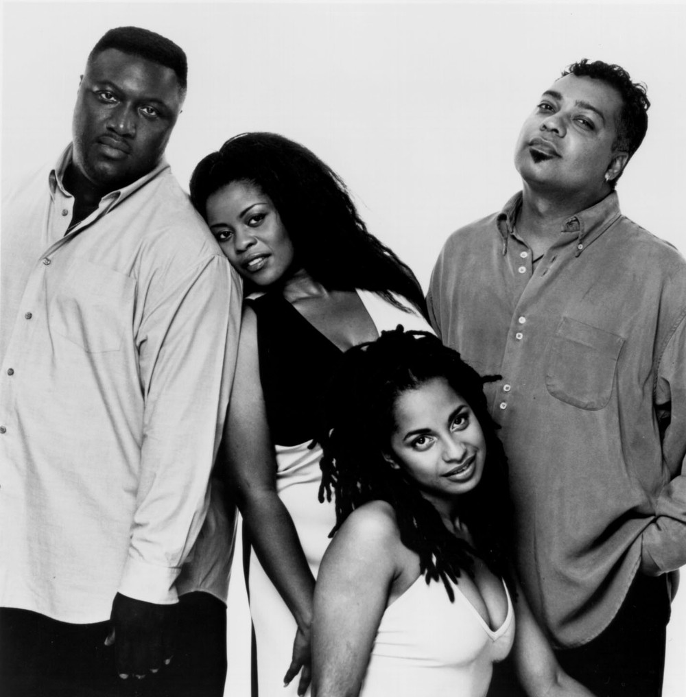

ALL ABOUT JAZZ!

누구나 즐겨듣고 흥을 타는 장르,
역사도 깊고 다양한 하위장르를 탄생시킨 매력적인 음악, JAZZ!
재즈는 어떻게 해서 탄생했고 어떻게 많은 사람들의 사랑을 받게 되었을까?
"만일 당신이 재즈가 무엇이냐고 물어야 한다면,
당신은 재즈를 영원히 이해할 수 없을 것입니다."
-루이 암스트롱
WHERE DID THE JAZZ COME FROM?
무엇이 재즈를 재즈답게 만드는 점일까? 먼저 재즈의 기원에 대해 알아보면,
17세기 아프리카에서 미국으로 흑인들이 노예로 대량 수입되면서 흑인들의 노래인 노동요, 흑인 영가,
블루스와 같은 세 가지 음악의 종류에서, 특히 블루스 음악에서 그 기원을 찾아볼 수 있다.
재즈가 전문 음악가들에 의해서 본격적으로 연주되기 시작한 시기는 20세기에 들어서서
뉴 올리언즈(New Orleans)에서부터라고 알려져 있다.
재즈는 역경속에 있었던 미국의 흑인에게서 비롯된 음악이므로
아프리카의 음악적 요소가 많이 나타나고 있으며, 그 속에 흐 르는 감정과 가치관은
그들만의 특유한 것이라고 봐도 과언이 아닐 듯 하다.
그러나 그들은 백인의 사회안에서 생활하기 때문에 백인의 영향을 대단히 많이 받았으리라는 것도 짐작하기 어렵지 않다.
즉 재즈는 흑인적인 요소와 백인적인 요소의 결합으로 태어난 새로운 방향의 음악 이라고 하겠다.
SO MANY FACES OF JAZZ..
많은 사람들의 사랑을 받은 만큼, 다양한 변신을 시도한 재즈!
재즈에서부터 파생된 몇 가지 하위장르들을 알아보자.
Acid Jazz
애시드 재즈란?
펑크나 일렉트로닉,하우스등 다양한 댄스 사운드과 결합한 재즈의 한 갈래.
신디사이저와 로즈 일렉트릭 피아노, 월리처 일렉트릭 피아노, 하몬드 오르간, 클라비넷 같은 일렉트릭 키보드 등 전자악기의 적극적인 활용과 반복적인 코드를 사용하여 특유의 Acid (몽환적)인 분위기를 조성하는 것 또한 주요한 특징이다.
특히 재즈, 디스코, 펑크, 힙합 등 리듬이 부각되는 장르들이 결합된 양식이기에 춤추기에 적합한 경쾌한 분위기를 띄는 리듬의 곡이 많은 편이다.
애시드 재즈의 대표적인 아티스트들
Incognito, Jamiroquai

Jazz Hiphop
재즈와 힙합의 만남
힙합과 재즈에서 파생된 하위 장르이며 재즈힙합이라고도 불린다.
2000년대 중후반부터는 일본을 중심으로 샘플링 작법을 기반으로 한 전통적인 재즈힙합 장르와는 달리 뉴에이지 등 보다 멜로디에 초점을 맞춘 멜로우 재즈 힙합 또한 인기를 얻고 있다.
참고로 내가 가장 좋아하는 음악 장르이다.
재즈 힙합의 대표적인 DJ들
Nujabes, DJ Okawari, Re:plus, Nishihara Kenichiro
Bossa Nova
애시드 재즈와는 다른 흥겨움
보사노바(포르투갈어: Bossa Nova, 새로운 성향)는 브라질 대중음악의 한 형식으로 1960년대에 브라질의 세계적인 작곡가 안토니오 카를루스 조빙(Antonio Carlos Jobim), 보사 노바의 신이라 불리는 주앙 지우베르투(João Gilberto)가 발전시켰다.
삼바에서 나온 음악 형식이지만, 삼바보다 멜로디가 더 감미롭고, 타악기가 덜 강조된다. 이 장르는 재즈에서 큰 영향을 받았고, 1960년대에 미국, 브라질에서 크게 유행했다.
보사노바의 대표적인 아티스트